หน้าแรก
ที่พัก
จุดเช็คอิน
ของฝาก
ร้านอาหาร
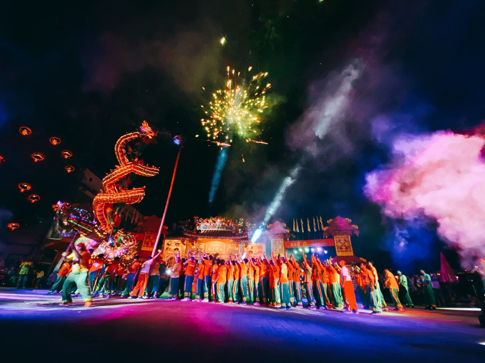
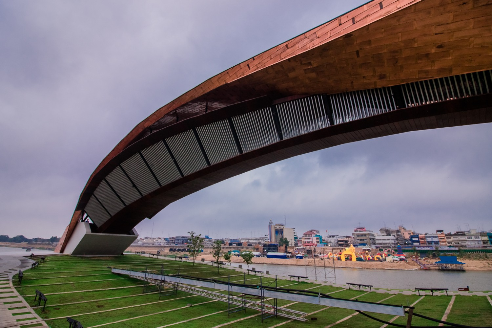
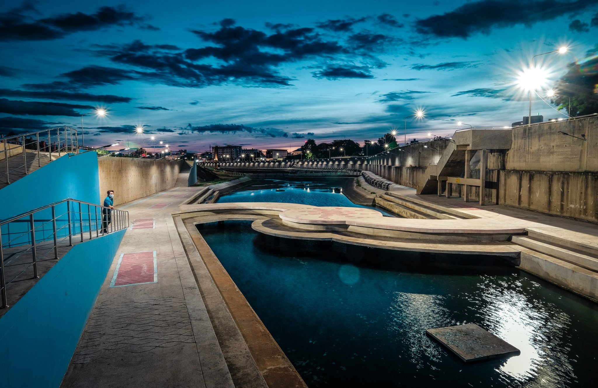
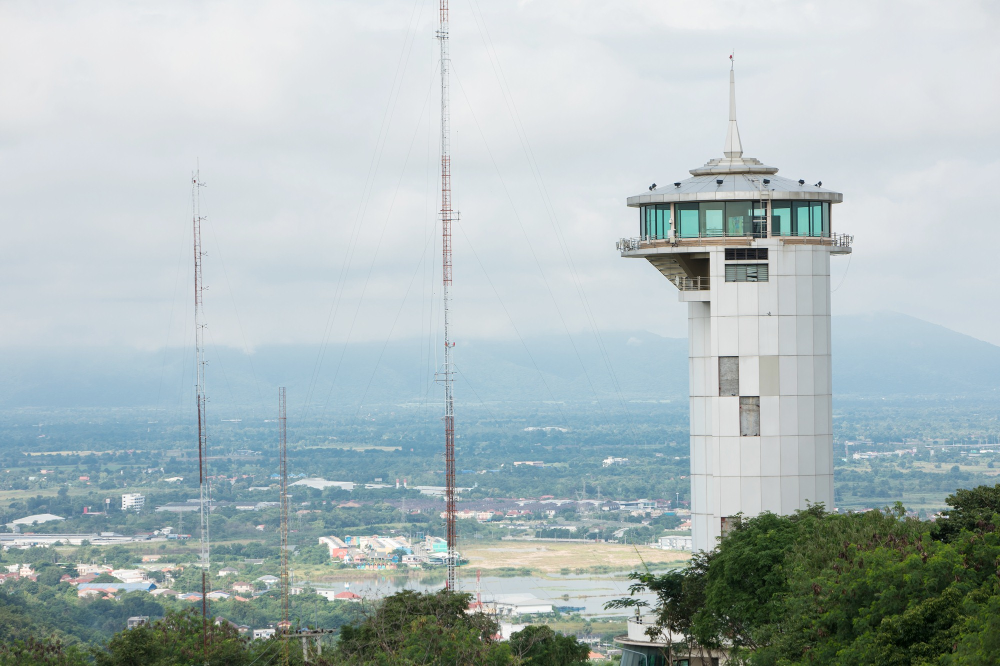
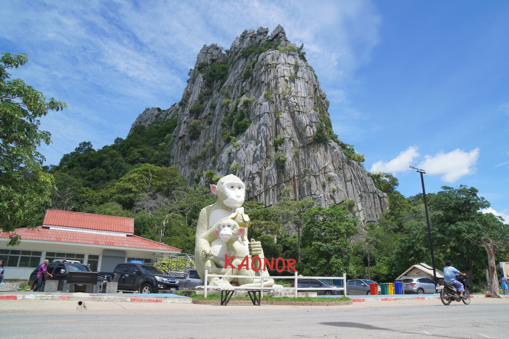
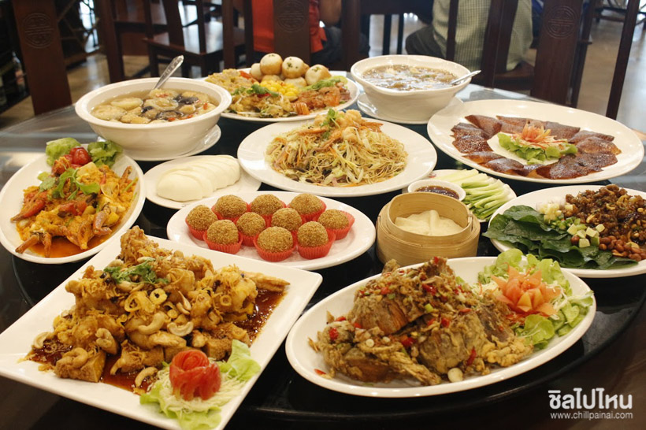
แนะนำสถานที่ท่องเที่ยว จังหวัดนครสวรรค์
คำขวัญ คำขวัญประจำจังหวัด "เมืองสี่แคว แห่มังกร พักผ่อนบึงบอระเพ็ด ปลารสเด็ดปากน้ำโพ"
Previous
Next
30 ที่เที่ยวจังหวัดนครสวรรค์
เที่ยวไม่หมด ไม่ต้องกลับบ้าน!
ที่พัก
ค้นหาที่พักในจังหวัดนครสวรรค์
จุดน่าเช็คอิน
ค้นหาจุดที่น่าเช็คอินมากที่สุด
ของฝาก
ค้นหาร้านของฝากประจำจังหวัดนครสวรรค์
‹ Previous
1
2
3
Next ›
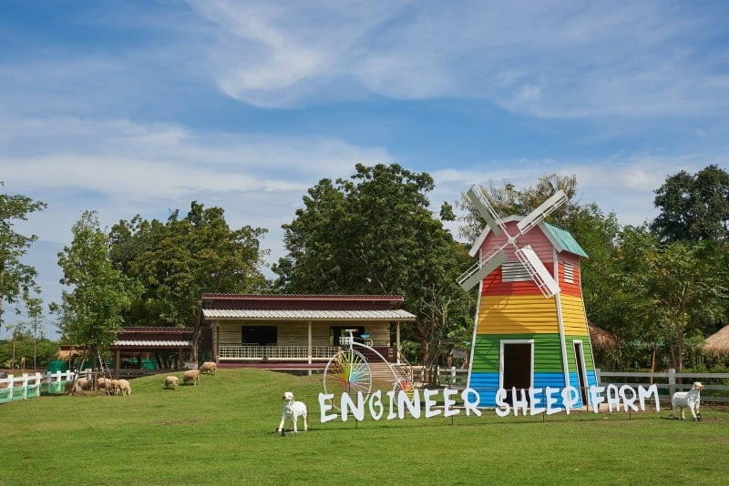
11. ฟาร์มแกะทหารช่าง
ที่นี่เป็นสถานที่ท่องเที่ยงเชิงเกษตร มีศูนย์การเรียนรู้เศรษฐกิจพอเพียง และยังมีจุดให้อาหารแกะ อีกด้วย รวมถึงกิจกรรมต่างๆ ที่เหมาะมาเที่ยวกันได้ทั้งครอบครัว ทางฟาร์มยังมีกิจกรรมเวิร์คช็อปงานศิลปะต่างๆ ให้คุณหนูๆ ได้ใช้เวลาว่างอย่างสร้างสรรค์ที่นี่
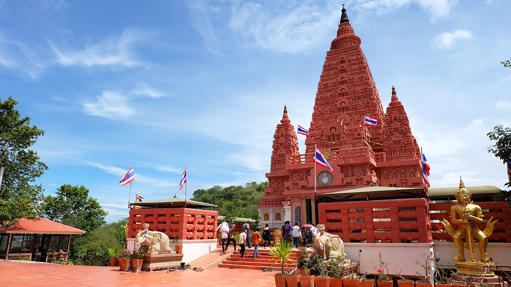
12. วัดป่าสิริวัฒนวิสุทธิ์
สร้างขึ้นเพื่อเฉลิมพระเกียรติในหลวงรัชกาลที่ 9 เนื่องในโอกาสที่ทรงเจริญพระชนมพรรษาครบ 80 พรรษา โดยวัดจะมีการออกแบบเป็น รูปเรือหลวง ตั้งบนยอดเขา อีกทั้งภายในวัดยังมี เจดีย์ศรีพุทธคยา ซึ่งจำลองแบบมาจากเจดีย์พุทธคยา ประเทศอินเดีย และภายในองค์เจดีย์ประดิษฐานพระบรมสารีริกธาตุ ให้มาสักการะบูชากันได้
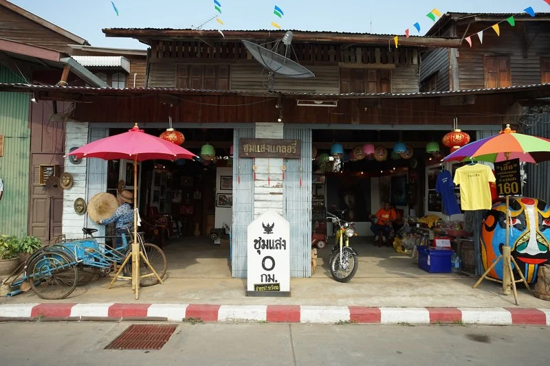
13. ตลาดร้อยปีชุมแสง
เป็นตลาดเก่าร้อยปี ชุมชนริมน้ำน่านที่เก่าแก่ และคลาสสิค ตลาดแห่งนี้เคยเป็นชุมทางการค้า เป็นแหล่งขายข้าวที่สำคัญ และมีชาวจีนอพยพมาตั้งถิ่นฐาน ค้าขายเป็นจำนวนมาก เนื่องจากมีสถานีชุมแสง เส้นทางรถไฟสายเหนือวิ่งผ่านตั้งแต่ปี พ.ศ.2450
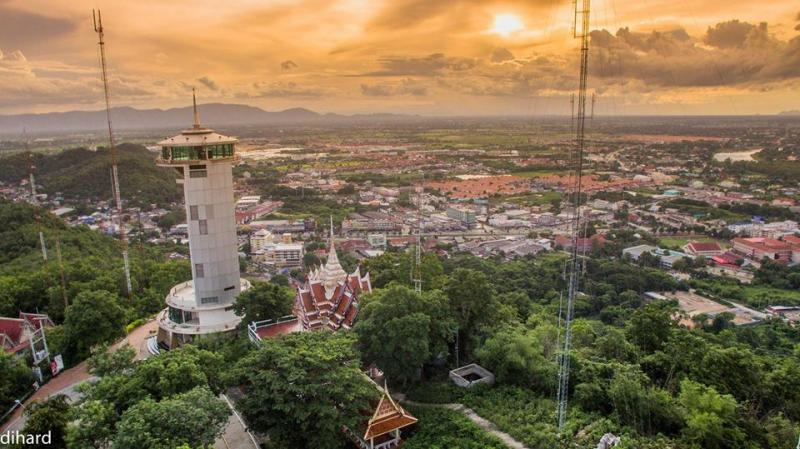
14. หอชมเมืองนครสวรรค์
เป็นที่ชมวิวสวยๆ รอบเมืองนครสวรรค์ เป็นหอสูงถึง 32 เมตร มีทั้งหมด 10 ชั้นโดยในแต่ละชั้นก็จะเป็นโซนที่แตกต่างกันออกไป เช่น ชั้นที่ 1 เป็นโซนที่พูดถึงเรื่องราวความเป็นมาของจังหวัดนครสวรรค์ สำหรับชั้นที่ 4 - 9 เป็นบันไดเวียนขึ้นสู่ชั้นที่ 10 ซึ่งเป็นบริเวณดาดฟ้า สำหรับชมวิวแบบ 360 องศา
15. ศาลเจ้าพ่อเทพารักษ์ เจ้าแม่ทับทิม
เป็นศาลเจ้าเก่าแก่ที่มีอายุมากกว่า 130 ปีแล้ว ตั้งอยู่ริมแม่น้ำเจ้าพระยา ตรงข้ามตลาดปากน้ำโพ ที่นี่เป็นศูนย์รวมจิตใจของชาวปากน้ำโพ ภายในประดิษฐาน องค์เทพเจ้าบ๊นเถ่ากง เทพเจ้ากวนอู และ เจ้าแม่ทับทิม ซึ่งเป็นที่นิยมมาขอพรโชคลาภ โดยเฉพาะใน เทศกาลตรุษจีน จะมีการอัญเชิญองค์เทพเจ้าแห่รอบตลาดปากน้ำโพอย่างยิ่งใหญ่ เพื่อให้ผู้คนได้มาสักการะบูชา และมีการแสดงต่างๆ การจัดพิธีลุยไฟ การแสดงปาฏิหาริย์จากเทพเจ้าในร่างม้าทรงอีกด้วย
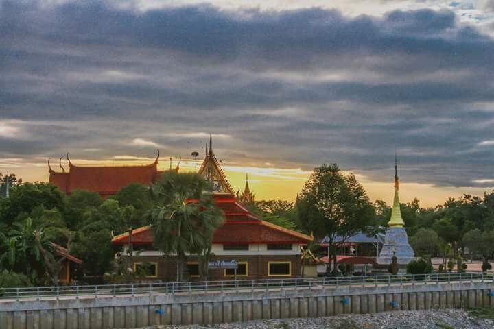
16. วัดเกยไชยเหนือ (บรมธาตุ)
เดิมวัดแห่งนี้เรียกว่า วัดพระบรมธาตุ เป็นวัดเก่าแก่ที่ตั้งอยู่ริมฝั่งแม่น้ำยม ในบริเวณแม่น้ำยมมาบรรจบกับแม่น้ำน่าน สันนิษฐานว่าสร้างขึ้นในสมัยสุโขทัย ประมาณปี พ.ศ.1906-1912 มีพระอุโบสถหลังเก่าที่มีสถาปัตยกรรมงดงามซึ่งสร้างขึ้นในสมัยรัชกาลที่ 3 โดยภายในมีปูชนียวัตถุสำคัญ คือ พระประธาน ซึ่งองค์พระมีลักษณะเป็นลายดอกพิกุล และ รูปหล่อพระครูนิรภัยวิเทต หรือ หลวงพ่อทองอยู่ ซึ่งเป็นอดีตท่านเจ้าอาวาส
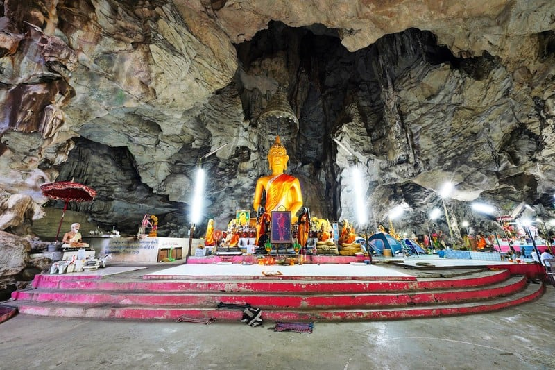
17. วัดเทพนิมิตรทรงธรรม (ถ้ำบ่อยา)
นั้นเป็นถ้ำสวยและวัดสวย ที่มีพระพุทธรูปประดิษฐานอยู่ภายในถ้ำมากมาย และยังมีเทวรูปอย่าง พระศิวะ พระแม่ลักษมีเทวี ปู่ฤาษี พระแม่อุมาเทวี พระแม่มหากาลี รวมถึงมีวัตถุโบราณต่างๆ เช่นกัน และยังได้ชื่อว่าเป็นถ้ำหินปูนที่สวยที่สุดของจังหวัดนครสวรรค์อีกด้วย
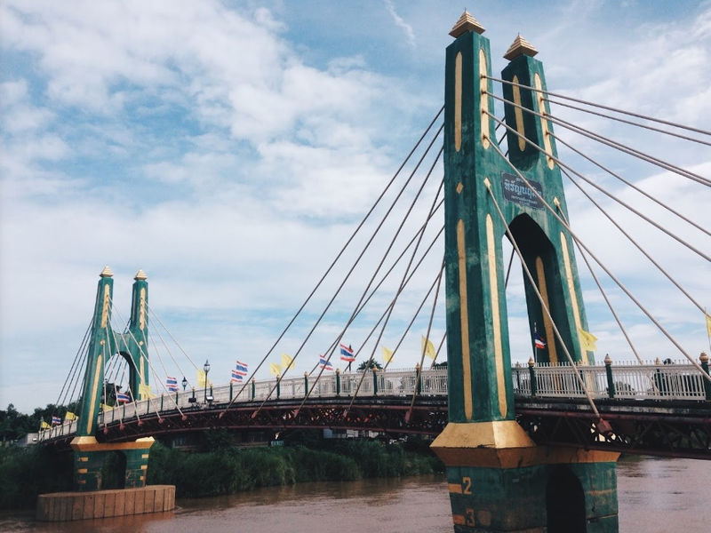
18. สะพานหิรัญนฤมิต
สะพานแขวนสีเขียว ของ อำเภอชุมแสง จังหวัดนครสวรรค์ แห่งนี้ ถือได้ว่าเป็นไฮไลท์ที่อยู่คู่ชุมชนชุมแสงเลยก็ว่าได้ โดยสร้างขึ้นมาไว้สำหรับข้ามผ่านลำแม่น้ำน่าน ซึ่งก็เป็นสะพานสไตล์แบบย้อนยุคคลาสสิค ที่ถ่ายภาพออกมาได้สวยสุดๆ ใครแวะไปเทียวที่ชุมแสง ต้องไปพลาดไปเช็คอินที่สะพานแห่งนี้แล้วค่า
19. พิพิธภัณฑ์หลวงพ่อเดิม วัดหนองโพ
เป็นวัดของ หลวงพ่อเดิม ที่ได้รับการขนานนามและยกย่องให้เป็น เทพเจ้าแห่งเมืองสี่แคว และยังเป็นที่เคารพรักของชาวนครสวรรค์ ภายในวัดจะมีมณฑปที่ประดิษฐานรูปหล่อโลหะของหลวงพ่อ เหมือนขนาดเท่าองค์จริงด้วย นอกจากนี้ยังมีงานทำบุญยิ่งใหญ่ประจำปี ที่เราจะสามารถปิดทอง ไหว้พระรูปเหมือนหลวงพ่อเดิม โดยจะจัดขึ้น 13 ค่ำ เดือน 3 ของทุกปี รวมไปถึงมี พิพิธภัณฑ์หลวงพ่อเดิม ให้เราได้เดินชมประวัติของท่าน
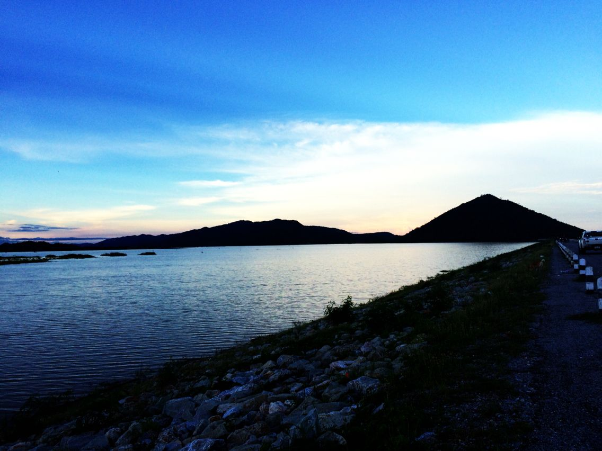
20. เขื่อนคลองโพธิ์
เป็นเขื่อนที่มีวิวสวยๆ ล้อมรอบ เพราะจะเต็มไปด้วยภูเขา ธรรมชาติสวยๆ มากมาย รวมถึงสามารถชมวิถีชีวิตของชาวประมงที่ออกมาจับปลาในอ่างเก็บน้ำได้ นับว่าเป็นสถานที่พักผ่อนที่เราจะได้สัมผัสกับบรรยากาศสุดชิล รวมถึงยังมาตั้งแคมป์ปิ้งริมเขื่อนได้ด้วยน้า ยิ่งถ้าใครได้มาเห็นบรรยากาศของพระอาทิตย์ช่วงลับขอบฟ้าไป จะต้องตกหลุมรักที่นี่แน่นอน
‹ Previous
1
2
3
Next ›
Follow Me
จัดทำโดย
นาย ศิลป์ศรุต ก้อนทอง เลขที่15
นาย ณัชพล เอี่ยมมงคล เลขที่8
นาย จิตะบุณย์ ดีพิจารณ์ เลขที่4
Newsletter
Send